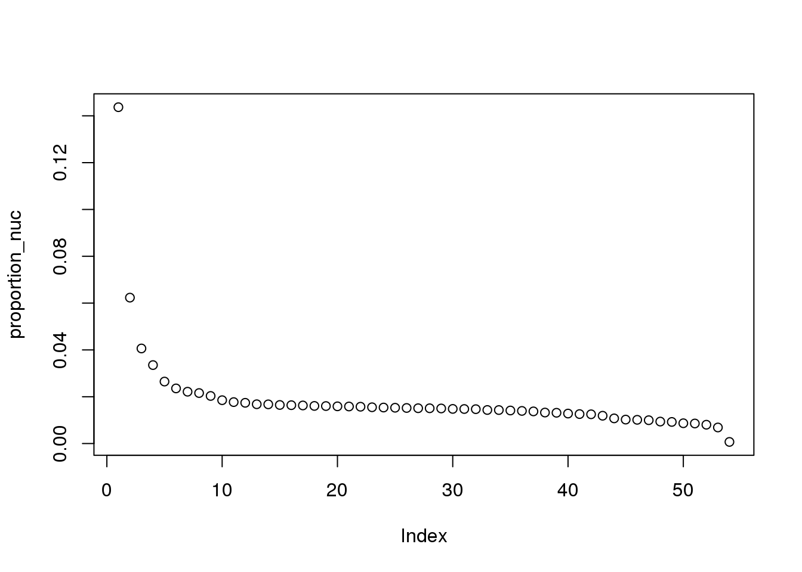
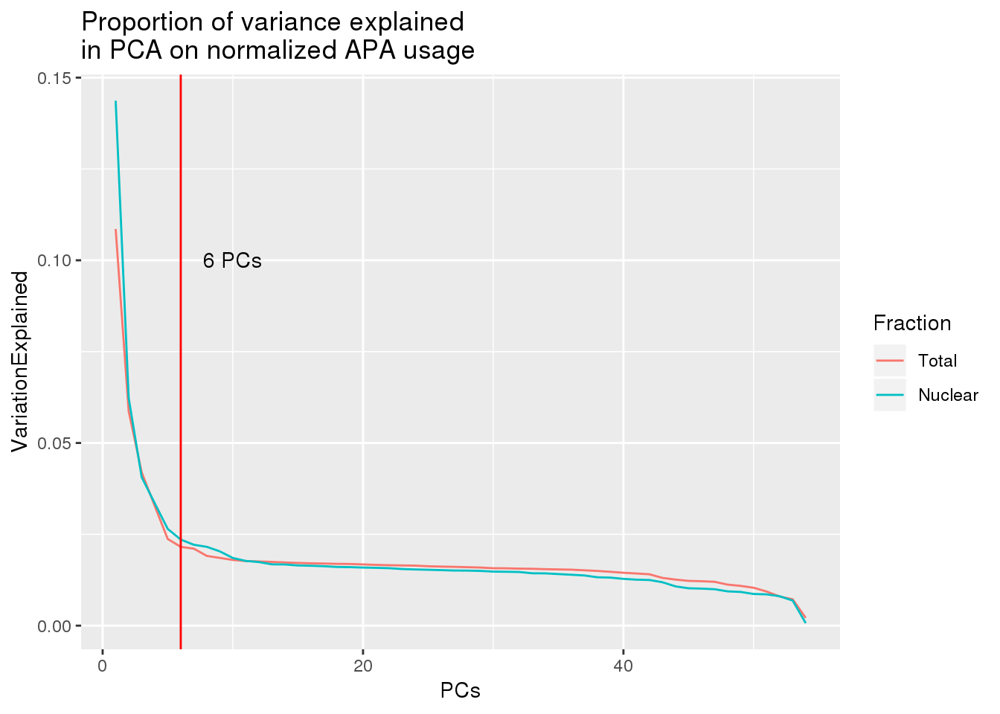
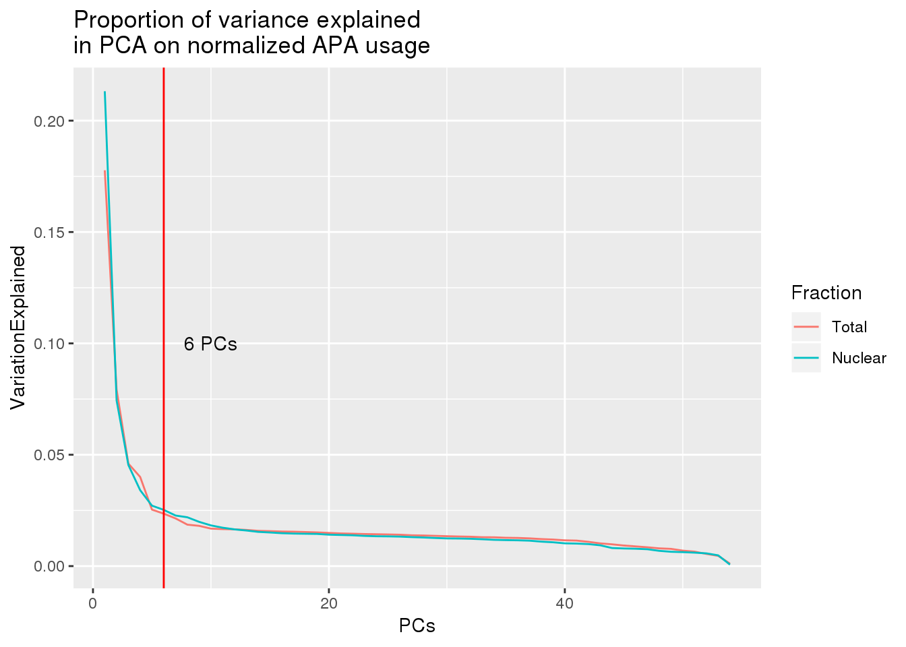
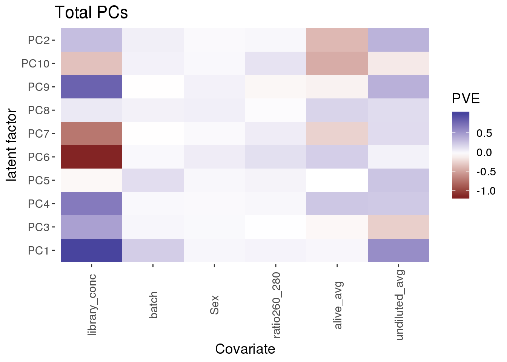

Choose PCs
Briana Mittleman
5/8/2019
Last updated: 2019-05-09
Checks: 6 0
Knit directory: apaQTL/analysis/
This reproducible R Markdown analysis was created with workflowr (version 1.3.0). The Checks tab describes the reproducibility checks that were applied when the results were created. The Past versions tab lists the development history.
Great! Since the R Markdown file has been committed to the Git repository, you know the exact version of the code that produced these results.
Great job! The global environment was empty. Objects defined in the global environment can affect the analysis in your R Markdown file in unknown ways. For reproduciblity it’s best to always run the code in an empty environment.
The command set.seed(20190411) was run prior to running the code in the R Markdown file. Setting a seed ensures that any results that rely on randomness, e.g. subsampling or permutations, are reproducible.
Great job! Recording the operating system, R version, and package versions is critical for reproducibility.
Nice! There were no cached chunks for this analysis, so you can be confident that you successfully produced the results during this run.
Great! You are using Git for version control. Tracking code development and connecting the code version to the results is critical for reproducibility. The version displayed above was the version of the Git repository at the time these results were generated.
Note that you need to be careful to ensure that all relevant files for the analysis have been committed to Git prior to generating the results (you can use wflow_publish or wflow_git_commit). workflowr only checks the R Markdown file, but you know if there are other scripts or data files that it depends on. Below is the status of the Git repository when the results were generated:
Ignored files:
Ignored: .DS_Store
Ignored: .Rhistory
Ignored: .Rproj.user/
Ignored: output/.DS_Store
Untracked files:
Untracked: .Rprofile
Untracked: ._.DS_Store
Untracked: .gitignore
Untracked: _workflowr.yml
Untracked: analysis/._PASdescriptiveplots.Rmd
Untracked: analysis/._cuttoffPercUsage.Rmd
Untracked: analysis/cuttoffPercUsage.Rmd
Untracked: apaQTL.Rproj
Untracked: code/._FC_UTR.sh
Untracked: code/._FC_newPeaks_olddata.sh
Untracked: code/._LC_samplegroups.py
Untracked: code/._SnakefilePAS
Untracked: code/._SnakefilefiltPAS
Untracked: code/._aAPAqtl_nominal39ind.sh
Untracked: code/._apaQTLCorrectPvalMakeQQ.R
Untracked: code/._apaQTL_Nominal.sh
Untracked: code/._apaQTL_permuted.sh
Untracked: code/._bed2saf.py
Untracked: code/._bothFrac_FC.sh
Untracked: code/._callPeaksYL.py
Untracked: code/._chooseAnno2SAF.py
Untracked: code/._chooseSignalSite
Untracked: code/._chooseSignalSite.py
Untracked: code/._cluster.json
Untracked: code/._clusterPAS.json
Untracked: code/._clusterfiltPAS.json
Untracked: code/._config.yaml
Untracked: code/._config2.yaml
Untracked: code/._configOLD.yaml
Untracked: code/._convertNumeric.py
Untracked: code/._dag.pdf
Untracked: code/._extractGenotypes.py
Untracked: code/._fc2leafphen.py
Untracked: code/._filter5perc.R
Untracked: code/._filter5percPheno.py
Untracked: code/._filterpeaks.py
Untracked: code/._finalPASbed2SAF.py
Untracked: code/._fixFChead.py
Untracked: code/._fixFChead_bothfrac.py
Untracked: code/._make5percPeakbed.py
Untracked: code/._makeFileID.py
Untracked: code/._makePheno.py
Untracked: code/._makeSAFbothfrac5perc.py
Untracked: code/._mergeAllBam.sh
Untracked: code/._mergeByFracBam.sh
Untracked: code/._mergePeaks.sh
Untracked: code/._namePeaks.py
Untracked: code/._peak2PAS.py
Untracked: code/._peakFC.sh
Untracked: code/._pheno2countonly.R
Untracked: code/._quantassign2parsedpeak.py
Untracked: code/._removeloc_pheno.py
Untracked: code/._run_leafcutterDiffIso.sh
Untracked: code/._selectNominalPvalues.py
Untracked: code/._snakemakePAS.batch
Untracked: code/._snakemakefiltPAS.batch
Untracked: code/._submit-snakemakePAS.sh
Untracked: code/._submit-snakemakefiltPAS.sh
Untracked: code/._subset_diffisopheno.py
Untracked: code/._utrdms2saf.py
Untracked: code/.snakemake/
Untracked: code/APAqtl_nominal.err
Untracked: code/APAqtl_nominal.out
Untracked: code/APAqtl_nominal_39.err
Untracked: code/APAqtl_nominal_39.out
Untracked: code/APAqtl_permuted.err
Untracked: code/APAqtl_permuted.out
Untracked: code/BothFracDTPlotGeneRegions.err
Untracked: code/BothFracDTPlotGeneRegions.out
Untracked: code/DistPAS2Sig.py
Untracked: code/FC_UTR.err
Untracked: code/FC_UTR.out
Untracked: code/FC_UTR.sh
Untracked: code/FC_newPAS_olddata.err
Untracked: code/FC_newPAS_olddata.out
Untracked: code/FC_newPeaks_olddata.sh
Untracked: code/LC_samplegroups.py
Untracked: code/README.md
Untracked: code/Rplots.pdf
Untracked: code/Upstream100Bases_general.py
Untracked: code/aAPAqtl_nominal39ind.sh
Untracked: code/apaQTLCorrectPvalMakeQQ_4pc.R
Untracked: code/apaQTL_Nominal_4pc.sh
Untracked: code/apaQTL_permuted.4pc.sh
Untracked: code/bam2bw.err
Untracked: code/bam2bw.out
Untracked: code/bothFrac_FC.err
Untracked: code/bothFrac_FC.out
Untracked: code/bothFrac_FC.sh
Untracked: code/dag.pdf
Untracked: code/dagPAS.pdf
Untracked: code/dagfiltPAS.pdf
Untracked: code/extractGenotypes.py
Untracked: code/fc2leafphen.py
Untracked: code/finalPASbed2SAF.py
Untracked: code/findbuginpeaks.R
Untracked: code/fixFChead_bothfrac.py
Untracked: code/fixFChead_summary.py
Untracked: code/get100upPAS.py
Untracked: code/getSeq100up.sh
Untracked: code/getseq100up.err
Untracked: code/getseq100up.out
Untracked: code/log/
Untracked: code/makeSAFbothfrac5perc.py
Untracked: code/removeloc_pheno.py
Untracked: code/run_DistPAS2Sig.err
Untracked: code/run_DistPAS2Sig.out
Untracked: code/run_distPAS2Sig.sh
Untracked: code/run_leafcutterDiffIso.sh
Untracked: code/run_leafcutter_ds.err
Untracked: code/run_leafcutter_ds.out
Untracked: code/selectNominalPvalues.py
Untracked: code/snakePASlog.out
Untracked: code/snakefiltPASlog.out
Untracked: code/subset_diffisopheno.py
Untracked: code/utrdms2saf.py
Untracked: data/CompareOldandNew/
Untracked: data/DTmatrix/
Untracked: data/DiffIso/
Untracked: data/PAS/
Untracked: data/QTLGenotypes/
Untracked: data/README.md
Untracked: data/Reads2UTR/
Untracked: data/SignalSiteFiles/
Untracked: data/ThirtyNineIndQtl_nominal/
Untracked: data/apaQTLNominal/
Untracked: data/apaQTLNominal_4pc/
Untracked: data/apaQTLPermuted/
Untracked: data/apaQTLPermuted_4pc/
Untracked: data/apaQTLs/
Untracked: data/assignedPeaks/
Untracked: data/bam/
Untracked: data/bam_clean/
Untracked: data/bam_waspfilt/
Untracked: data/bed_10up/
Untracked: data/bed_clean/
Untracked: data/bed_clean_sort/
Untracked: data/bed_waspfilter/
Untracked: data/bedsort_waspfilter/
Untracked: data/bothFrac_FC/
Untracked: data/exampleQTLs/
Untracked: data/fastq/
Untracked: data/filterPeaks/
Untracked: data/inclusivePeaks/
Untracked: data/inclusivePeaks_FC/
Untracked: data/mergedBG/
Untracked: data/mergedBW_byfrac/
Untracked: data/mergedBam/
Untracked: data/mergedbyFracBam/
Untracked: data/nuc_10up/
Untracked: data/nuc_10upclean/
Untracked: data/peakCoverage/
Untracked: data/peaks_5perc/
Untracked: data/phenotype/
Untracked: data/phenotype_5perc/
Untracked: data/sort/
Untracked: data/sort_clean/
Untracked: data/sort_waspfilter/
Untracked: nohup.out
Untracked: output/._.DS_Store
Untracked: output/dtPlots/
Untracked: output/fastqc/
Unstaged changes:
Modified: analysis/PASusageQC.Rmd
Modified: analysis/corrbetweenind.Rmd
Modified: analysis/rerunQTL_changePC.Rmd
Deleted: code/Upstream10Bases_general.py
Modified: code/apaQTLCorrectPvalMakeQQ.R
Modified: code/apaQTL_permuted.sh
Modified: code/bed2saf.py
Modified: code/config.yaml
Deleted: code/test.txt
Note that any generated files, e.g. HTML, png, CSS, etc., are not included in this status report because it is ok for generated content to have uncommitted changes.
These are the previous versions of the R Markdown and HTML files. If you’ve configured a remote Git repository (see ?wflow_git_remote), click on the hyperlinks in the table below to view them.
| File | Version | Author | Date | Message |
|---|---|---|---|---|
| Rmd | 1c60a3a | brimittleman | 2019-05-09 | add metadata |
| html | 144c00b | brimittleman | 2019-05-08 | Build site. |
| Rmd | 5e39f1c | brimittleman | 2019-05-08 | choose pcs and start qtl rerun |
| html | f5af9c6 | brimittleman | 2019-05-08 | Build site. |
| Rmd | 1ba7d2b | brimittleman | 2019-05-08 | add pca |
library(tidyverse)── Attaching packages ──────────────────────────────────────────────────────────────── tidyverse 1.2.1 ──✔ ggplot2 3.1.1 ✔ purrr 0.3.2
✔ tibble 2.1.1 ✔ dplyr 0.8.0.1
✔ tidyr 0.8.3 ✔ stringr 1.3.1
✔ readr 1.3.1 ✔ forcats 0.3.0 ── Conflicts ─────────────────────────────────────────────────────────────────── tidyverse_conflicts() ──
✖ dplyr::filter() masks stats::filter()
✖ dplyr::lag() masks stats::lag()library(reshape2)
Attaching package: 'reshape2'The following object is masked from 'package:tidyr':
smithstotalqqnorm=read.table("../data/phenotype_5perc/APApeak_Phenotype_GeneLocAnno.Total.5perc.fc.gz.qqnorm.allChrom", col.names = c('Chr', 'start', 'end', 'ID', 'NA18486', 'NA18498', 'NA18499', 'NA18501', 'NA18502', 'NA18504', 'NA18505', 'NA18508', 'NA18510', 'NA18511', 'NA18516', 'NA18517', 'NA18519', 'NA18520', 'NA18522', 'NA18852', 'NA18853', 'NA18855', 'NA18856', 'NA18858', 'NA18861', 'NA18862', 'NA18870', 'NA18907', 'NA18909', 'NA18912', 'NA18913', 'NA18916', 'NA19092', 'NA19093', 'NA19101', 'NA19119', 'NA19128', 'NA19130', 'NA19131', 'NA19137','NA19138', 'NA19140', 'NA19141', 'NA19144', 'NA19152', 'NA19153', 'NA19160', 'NA19171', 'NA19193', 'NA19200','NA19207', 'NA19209', 'NA19210', 'NA19223', 'NA19225', 'NA19238', 'NA19239', 'NA19257'))
totalqqnorm_matrix=as.matrix(totalqqnorm %>% select(-Chr, -start, -end, -ID))RUn PCA:
pca_tot_peak=prcomp(totalqqnorm_matrix, center=T,scale=T)
pca_tot_df=as.data.frame(pca_tot_peak$rotation) %>% rownames_to_column(var="lib") %>% select(1:11)
pca_tot_df_fix=bind_cols(line=pca_tot_df[,dim(pca_tot_df)[[2]]],pca_tot_df[,3:dim(pca_tot_df)[[2]]-1])Variance explained:
eigs_tot <- pca_tot_peak$sdev^2
proportion_tot = eigs_tot/sum(eigs_tot)
plot(proportion_tot)
| Version | Author | Date |
|---|---|---|
| f5af9c6 | brimittleman | 2019-05-08 |
nuclearqqnorm=read.table("../data/phenotype_5perc/APApeak_Phenotype_GeneLocAnno.Nuclear.5perc.fc.gz.qqnorm.allChrom", col.names = c('Chr', 'start', 'end', 'ID', 'NA18486', 'NA18498', 'NA18499', 'NA18501', 'NA18502', 'NA18504', 'NA18505', 'NA18508', 'NA18510', 'NA18511', 'NA18516', 'NA18517', 'NA18519', 'NA18520', 'NA18522', 'NA18852', 'NA18853', 'NA18855', 'NA18856', 'NA18858', 'NA18861', 'NA18862', 'NA18870', 'NA18907', 'NA18909', 'NA18912', 'NA18913', 'NA18916', 'NA19092', 'NA19093', 'NA19101', 'NA19119', 'NA19128', 'NA19130', 'NA19131', 'NA19137','NA19138', 'NA19140', 'NA19141', 'NA19144', 'NA19152', 'NA19153', 'NA19160', 'NA19171', 'NA19193', 'NA19200','NA19207', 'NA19209', 'NA19210', 'NA19223', 'NA19225', 'NA19238', 'NA19239', 'NA19257'))
nuclearqqnorm_matrix=as.matrix(nuclearqqnorm %>% select(-Chr, -start, -end, -ID))pca_nuc_peak=prcomp(nuclearqqnorm_matrix, center=T,scale=T)
pca_nuc_df=as.data.frame(pca_nuc_peak$rotation) %>% rownames_to_column(var="lib") %>% select(1:11)
pca_nuc_df_fix=bind_cols(line=pca_nuc_df[,dim(pca_nuc_df)[[2]]],pca_nuc_df[,3:dim(pca_nuc_df)[[2]]-1])Variance explained:
eigs_nuc <- pca_nuc_peak$sdev^2
proportion_nuc = eigs_nuc/sum(eigs_nuc)
plot(proportion_nuc)
| Version | Author | Date |
|---|---|---|
| f5af9c6 | brimittleman | 2019-05-08 |
Plot together:
both_prop=as.data.frame(cbind(PCs=seq(1,54,1),Total=proportion_tot,Nuclear=proportion_nuc))
both_prop_melt=melt(both_prop, id.var=c("PCs"), variable.name="Fraction",value.name = "VariationExplained" )ggplot(both_prop_melt, aes(x=PCs, y=VariationExplained,group=Fraction, color=Fraction)) + geom_line() + geom_vline(xintercept = 6, col="red") + annotate("text", label="6 PCs", x=10, y=.1) + labs(title="Proportion of variance explained \nin PCA on normalized APA usage")
| Version | Author | Date |
|---|---|---|
| f5af9c6 | brimittleman | 2019-05-08 |
both_prop_melt_filt=both_prop_melt %>% filter(PCs<10)
ggplot(both_prop_melt_filt, aes(x=PCs, y=VariationExplained,group=Fraction, color=Fraction)) + geom_line() + geom_vline(xintercept = 4, col="red") + annotate("text", label="4 PCs", x=5, y=.1) + labs(title="Proportion of variance explained \nin PCA on normalized APA usage")
| Version | Author | Date |
|---|---|---|
| 144c00b | brimittleman | 2019-05-08 |
WHich factors correlate with PCs:
metadata=read.table("../data/MetaDataSequencing.txt", stringsAsFactors = F, header = T)
metadata_tot=metadata %>% filter(fraction=="total") %>% select(batch,Sex, alive_avg, undiluted_avg, library_conc,ratio260_280)
metadata_nuc=metadata %>% filter(fraction=="nuclear") %>% select(batch,Sex, alive_avg, undiluted_avg, library_conc,ratio260_280)Function from Ben
covariate_pc_pve_heatmap <- function(pc_df, covariate_df, title) {
# Load in data
pcs <- pc_df
#pcs=pca_tot_df_fix
covs <- covariate_df
#covs=metadata_tot
# Remove unimportant columns
pcs <- as.matrix(pcs[,2:dim(pcs)[[2]]])
covs <- data.frame(as.matrix(covs[,1:dim(covs)[[2]]]))
# Initialize PVE heatmap
pve_map <- matrix(0, dim(covs)[2], dim(pcs)[2])
colnames(pve_map) <- colnames(pcs)
rownames(pve_map) <- colnames(covs)
# Loop through each PC, COV Pair and take correlation
num_pcs <- dim(pcs)[2]
num_covs <- dim(covs)[2]
for (num_pc in 1:num_pcs) {
for (num_cov in 1:num_covs) {
pc_vec <- pcs[,num_pc]
cov_vec <- covs[,num_cov]
lin_model <- lm(pc_vec ~ cov_vec)
pve_map[num_cov, num_pc] <- summary(lin_model)$adj.r.squared
}
}
pve_map
ord <- hclust( dist(scale(pve_map), method = "euclidean"), method = "ward.D" )$order
melted_mat <- melt(pve_map)
colnames(melted_mat) <- c("Covariate", "PC","PVE")
# Use factors to represent covariate and pc name
melted_mat$Covariate <- factor(melted_mat$Covariate, levels = rownames(pve_map)[ord])
melted_mat$PC <- factor(melted_mat$PC)
if (dim(pcs)[2] == 10) {
levels(melted_mat$PC) <- c(levels(melted_mat$PC)[1],levels(melted_mat$PC)[3:10],levels(melted_mat$PC)[2])
}
if (dim(pcs)[2] == 21) {
levels(melted_mat$PC) <- c(levels(melted_mat$PC)[1],levels(melted_mat$PC)[12],levels(melted_mat$PC)[15:21],levels(melted_mat$PC)[2:11], levels(melted_mat$PC)[13:14])
}
# PLOT!
heatmap <- ggplot(data=melted_mat, aes(x=Covariate, y=PC)) + geom_tile(aes(fill=PVE)) + scale_fill_gradient2(midpoint=-.05, guide="colorbar")
heatmap <- heatmap + theme(text = element_text(size=14), panel.background = element_blank(), axis.text.x = element_text(angle = 90, vjust=.5))
heatmap <- heatmap + labs(y="latent factor", title=title)
# Save File
return(heatmap)
}covariate_pc_pve_heatmap(pca_tot_df,metadata_tot, title="Total PCs")
#covariate_pc_pve_heatmap(pca_nuc_df,metadata_nuc, title="Nuclear PCs")
sessionInfo()R version 3.5.1 (2018-07-02)
Platform: x86_64-pc-linux-gnu (64-bit)
Running under: Scientific Linux 7.4 (Nitrogen)
Matrix products: default
BLAS/LAPACK: /software/openblas-0.2.19-el7-x86_64/lib/libopenblas_haswellp-r0.2.19.so
locale:
[1] LC_CTYPE=en_US.UTF-8 LC_NUMERIC=C
[3] LC_TIME=en_US.UTF-8 LC_COLLATE=en_US.UTF-8
[5] LC_MONETARY=en_US.UTF-8 LC_MESSAGES=en_US.UTF-8
[7] LC_PAPER=en_US.UTF-8 LC_NAME=C
[9] LC_ADDRESS=C LC_TELEPHONE=C
[11] LC_MEASUREMENT=en_US.UTF-8 LC_IDENTIFICATION=C
attached base packages:
[1] stats graphics grDevices utils datasets methods base
other attached packages:
[1] reshape2_1.4.3 forcats_0.3.0 stringr_1.3.1 dplyr_0.8.0.1
[5] purrr_0.3.2 readr_1.3.1 tidyr_0.8.3 tibble_2.1.1
[9] ggplot2_3.1.1 tidyverse_1.2.1
loaded via a namespace (and not attached):
[1] Rcpp_1.0.0 cellranger_1.1.0 pillar_1.3.1 compiler_3.5.1
[5] git2r_0.23.0 plyr_1.8.4 workflowr_1.3.0 tools_3.5.1
[9] digest_0.6.18 lubridate_1.7.4 jsonlite_1.6 evaluate_0.12
[13] nlme_3.1-137 gtable_0.2.0 lattice_0.20-38 pkgconfig_2.0.2
[17] rlang_0.3.1 cli_1.0.1 rstudioapi_0.10 yaml_2.2.0
[21] haven_1.1.2 withr_2.1.2 xml2_1.2.0 httr_1.3.1
[25] knitr_1.20 hms_0.4.2 generics_0.0.2 fs_1.2.6
[29] rprojroot_1.3-2 grid_3.5.1 tidyselect_0.2.5 glue_1.3.0
[33] R6_2.3.0 readxl_1.1.0 rmarkdown_1.10 modelr_0.1.2
[37] magrittr_1.5 whisker_0.3-2 backports_1.1.2 scales_1.0.0
[41] htmltools_0.3.6 rvest_0.3.2 assertthat_0.2.0 colorspace_1.3-2
[45] labeling_0.3 stringi_1.2.4 lazyeval_0.2.1 munsell_0.5.0
[49] broom_0.5.1 crayon_1.3.4